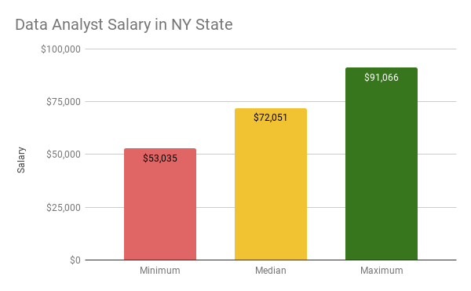
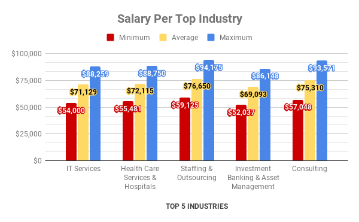
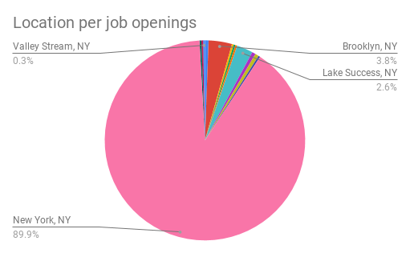
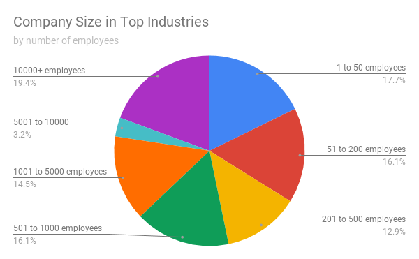

Glassdoor Data Analyst Job Listings in NY State
(Updated: 2021-05-02) by Kirsten Pevidal
Context
Looking to start a career in Data Analytics but you have no idea what sector or industry will be on-demand?
As someone who wants to become a data analyst in NY, I am curious about the job prospect in data analytics in the state of NY during the COVID19 pandemic.
It would be nice if there is some sort of "guide" that can help someone decide which industries are thriving and how much you can expect to get paid for.
So, I decided to try making one for my first Data Analytics spreadsheet project!
The Dataset
I found a dataset in Kaggle that contains scraped data of Data Analyst Job listing posted in Glassdoor. The dataset was scraped during July 2020 and only job postings that were up during that time period were scraped.
This is a very ideal dataset as it was scraped to help job seekers during the COVID19 Pandemic which is really helpful. Kudos to the user.
This dataset contains 2253 job listings from Glassdoor.
I cleaned the data to only include the 345 job listings from NY State. I also manually cleaned some of the data. Technically, data with empty cells should be removed but I decided to fill up cells with no data as best of my knowledge. I gathered and splitted some of the columns
in order to have the following:
- Job Title
- Company Name
- Minimum, Median, Maximum Salary (in USD)
- Rating (from 1-5)
- Company Size
- Industry
- Sector
What To Look At?
To determine the best choices we have to explore, I am going to check for the top industries and sectors in job listings and the salary distributions. Mainly,
I will focus at the top industries as they offer the best-of-both worlds when it comes to job availability and salary.
It would be also a good idea to look at the ratings, company size, and location of each job listings.
Constraints: this analysis does not include information about job listings that have work-from-home availability. Also, this analysis does not include job experience level yet. I am planning to look into that for futhur studies. Right now, I will rely on salary ranges to make an approximation for skill and experience level of each job listing.
Having all of these considered, I will do my best to still produce a work that can effectively help an undecided data analyst decide his/her path in Data Analytics.
Sectors & Industries
Approximately 82% of the job listings are from these 5 sectors. The top 5 sectors are respectively as follows: Information Technology, Business Services, Health Care, Finance, & Media.

There are 65 companies in the top industries.

I also managed to list all the industries under these sectors. You can view the chart beloow to see all the industries with job listings under each sectors:


Moving on, the top 5 industries with the most job listings are as follows: IT Services, Health Care Services & Hospitals, Staffing & Consulting, Investment Banking and Asset Management, & Consulting. These industries make up 52% of all job listings. That is 198 of 345 total job listings.

These industries have a lot of opening so entry-levels like me will want to take advantage of this and explote these industries. You can view all the industries and sectors here.
Salary Distribution
The data analyst job listings from NY state have a salary range from $53,000 to $91,000. Based on Payscale.com, the average data analyst salary in the US is $61,329. The median salary in the Glassdoor dataset for NY State is $72,051 ─ that is 17.4% higher than the national median salary for data analyst.
The chart below shows the salary distribution for the top industries:
Based on Salary.com, the salary range for Entry-Level/Jr. Data Analyst roles is $52,837 to $67,752. That is close to the minimum salary of the companies at the top industries, which is $55,538. Apart from having more listings, the top industries appear to also have competitive compensation.
If you are interested in a particular industry or sector, you can take a peak at the full listing here and feel free to use the dashboard as well.
Ratings
The ratings used are from the Glassdoor dataset, so the ratings of the company will be the rating they had during July 2020. Still, it is interesting to see how companies in the top industries do. Here, we can see that the Staffing & Outsourcing industry has the highest mean rating.

Overall, the median rating is very helpful as we can get an idea of the distribution of ratings of companies in each industry. The overall median rating of the dataset is 3.71, which is above average and basically has a good reception.
Locations
90% of the job listings are in Manhattan (New York, NY). That is not surprising as NYC is a top destination for data career. Unfortunately, I do not have the data to determine which listings offers WFH (work-from-home). That will be a good thing to consider for further studies since there are a lot of discussions online about permanent WFH option for employees post-pandemic.
Maybe in the future, location won't be a big of a deal anymore if WFH will be normalized.
Company Size
I assigned a grouping system for company sizes to simplify the process of analyzing it. The technique led me to discover that there are 8 size groups that are present in the dataset. They are as follow:
- Group 0 → Unknown Size
- Group 1 → 1 to 50 employees
- Group 2 → 51 to 200 employees
- Group 3 → 200 to 500 employees
- Group 4 → 501 to 1000 employees
- Group 5 → 1001 to 5000 employees
- Group 6 → 5000 to 10000 employees
- Group 7 → 10000+ employees
There are total of 233 companies in the dataset. 65 of the total companies have job listings in the dataset.
The company size in the top industries varies. Whether you prefer working in a start-up company or big corporation, there are listings for all company sizes.
Final Thoughts
In conclusion the job prospect in the top industries is nice. There are a lot of job listings available and the compensation is competitive. The average rating of each top industry is above average, so expect to have a good experience. The locations are mostly in NYC and either you want to work in a start-up or a large company, there are a couple of options for you out there.
As this is my first data analytic project, there are couple of things to improve on and some interesting topics that I uncovered for further studies. I appreciate receiving any feedbacks so please feel free to email me for feedback.
✽ Appendix
Google Sheet link that details the analysis
Kaggle raw dataset used for this analysis
© Kirsten Pevidal